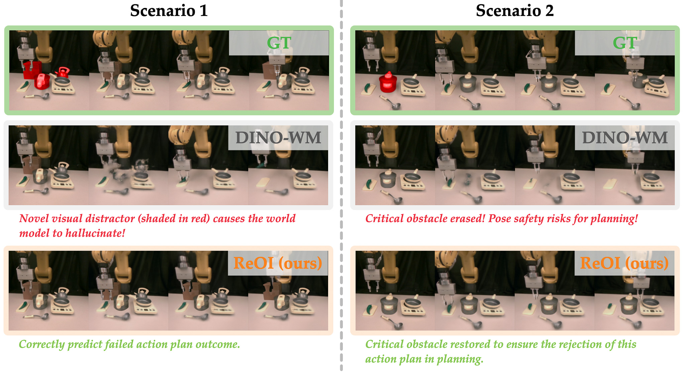
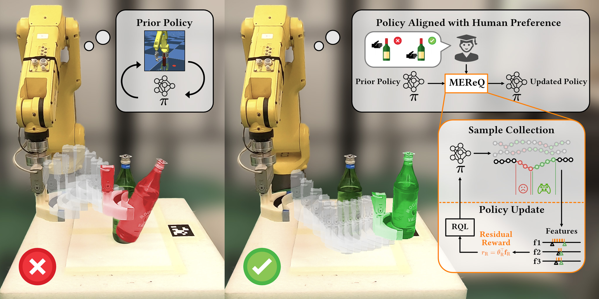
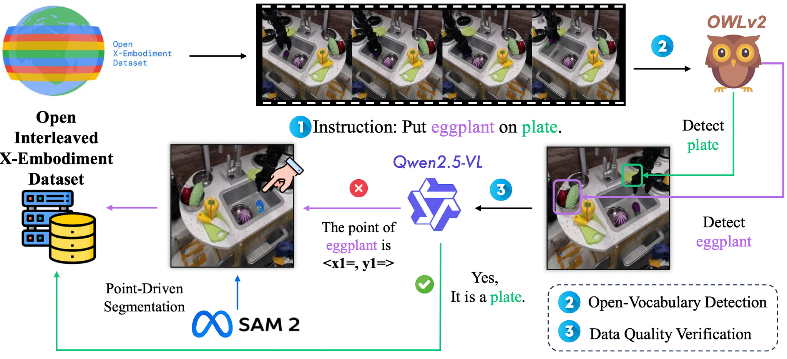
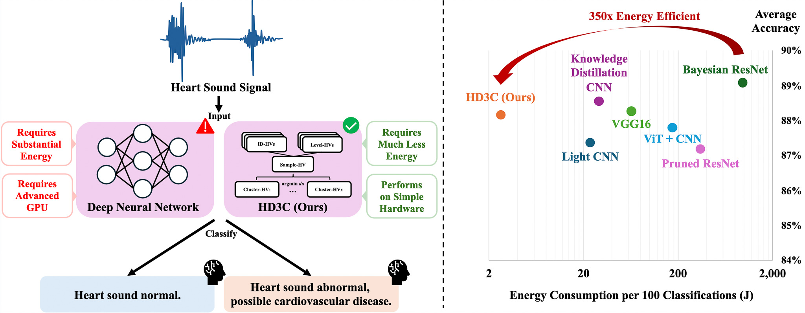
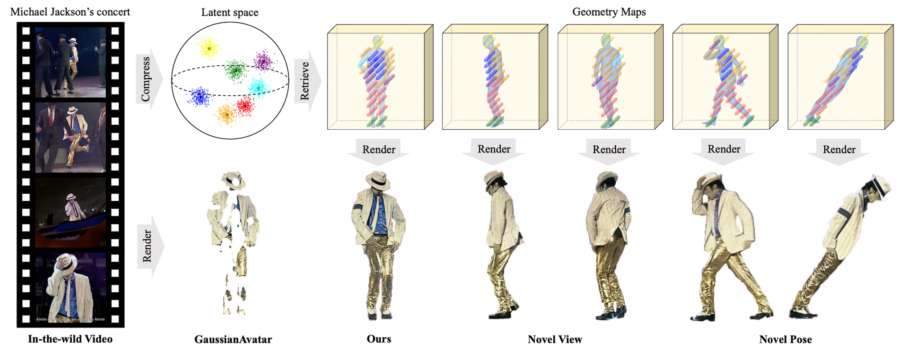

|
May 2025
|
Selected as student speaker at the Berkeley Global Access closing ceremony.
|
|
Dec 2024
|
Awarded the UC Berkeley BGA Scholarship 2024 (Top 10 students).
|
|
Nov 2024
|
Joined the MSC lab as a research intern, advised by Prof. Masayoshi Tomizuka.
|
|
Nov 2024
|
Won the National First Prize in CUMCM 2024 (Top 0.5% among 59,278 teams).
|
|
Sept 2024
|
Began studies at UC Berkeley as a visiting student.
|
|

|
Reimagination with Test-time Observation Interventions: Distractor-Robust World Model Predictions for Visual Model Predictive Control
Yuxin Chen*,
Jianglan Wei*,
Chenfeng Xu,
Boyi Li,
Masayoshi Tomizuka,
Andrea Bajcsy,
Ran Tian
RSS Workshop on OOD, 2025 (Oral, Best Paper Finalist)
arXiv
|
|

|
MEReQ: Max-Ent Residual-Q Inverse RL for Sample-Efficient Alignment from Intervention
Yuxin Chen*,
Chen Tang*,
Jianglan Wei,
Chenran Li,
Ran Tian,
Xiang Zhang,
Wei Zhan,
Peter Stone,
Masayoshi Tomizuka
Conference on Robot Learning (CoRL), 2025
arXiv
/
Project Page
|
|

|
Interleave-VLA: Enhancing Robot Manipulation with Interleaved Image
Cunxin Fan*,
Xiaosong Jia*,
Yihang Sun,
Yixiao Wang,
Jianglan Wei,
Ziyang Gong,
Xiangyu Zhao,
Masayoshi Tomizuka,
Xue Yang,
Junchi Yan,
Mingyu Ding,
ICRA Workshop on VLMs in Robotics, 2025 (Oral, Spotlight)
arXiv
|
|

|
HD3C: Efficient Medical Data Classification for Embedded Devices
Jianglan Wei*,
Zhenyu Zhang*,
Pengcheng Wang*,
Mingjie Zeng,
Zhigang Zeng
Under Review
PDF
/
Code
|
|

|
CodeAvatar: Learning Animatable Occlusion-Aware 3D Avatars in the Wield via Codebook Lookup Transformers
Qinzheng Zhou*,
Hao Wang*,
Jianglan Wei,
Lijing Lu,
Zhihang Li
Under Review
PDF
|
|
{kind=link}